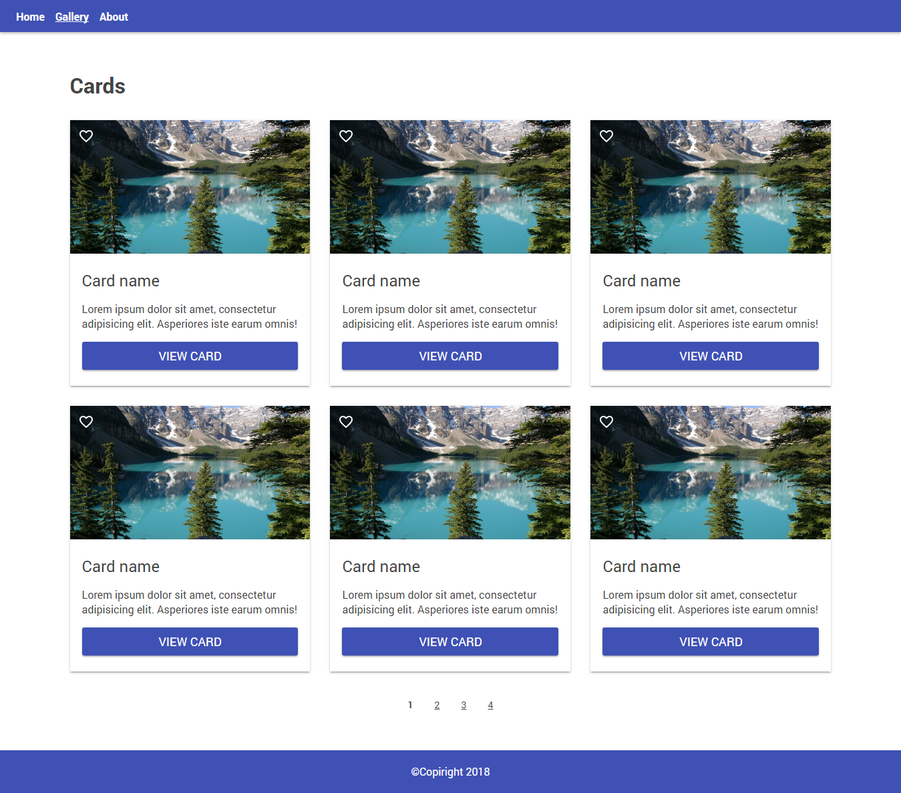

- Сделать подобно картинке
- использовать заготовку homework.css, свои стили писать под /* Your styles go below */
- использовать таблицу сброса из прошлого ДЗ
- иконка favorite лежит в папке images
- основная картинка карточки там же (чтоб не искать в интернете)
- header должен быть fixed (приклеенный сверху)
- ширина основной области 1170px (область с заголовком, карточками и постраничной навигацией)
- пункт меню Gallery сделать активным (на картинке подчеркивание)
- первая страница постраничной навигации не кликабельна и не имеет подчеркивания - то есть является активной.
- использовать box-sizing border-box для всех элементов
- все содержимое внутри body обернуть в <div class="wrapper">...<div>
- каждому элементу, кроме картинок, задать класс
- не изученные нами свойства, которые вам пригодятся находятся под комментарием unknown props
- не забывайте про валидацию
- ИСПОЛЬЗУЙТЕ HTML заготовку с прошлого урока, structure.html